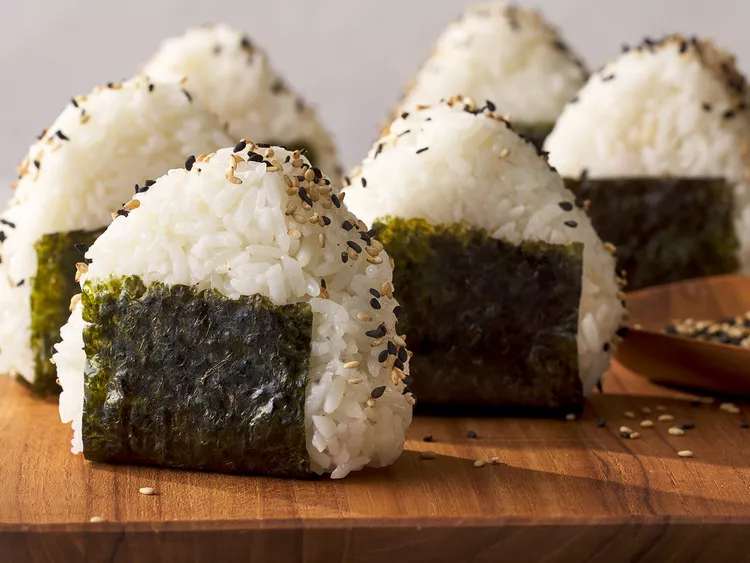

Onigiri
HOME

Description
This easy onigiri recipe is also fun to make! These rice balls are a staple of Japanese lunchboxes (bento).
You can put almost anything in these rice balls; try substituting grilled salmon, pickled plums, beef, pork, turkey, or tuna with mayonnaise.
Ingredients
- 4 cups uncooked short-grain white rice
- 5 ½ cups water, divided
- ¼ teaspoon salt
- ¼ cup bonito shavings (dry fish flakes)
- 2 sheets nori (dry seaweed), cut into 1/2-inch strips
- 2 tablespoons sesame seeds
Steps
- Wash rice in a mesh strainer until water runs clear.
-
Combine washed rice and 4 1/2 cups water in a saucepan
-
Bring to a boil over high heat, stirring occasionally.
-
Reduce heat to low; cover, and simmer rice until water is absorbed,
-
15 to 20 minutes. Let rice rest for 15 minutes to continue to steam and become tender. Allow cooked rice to cool.